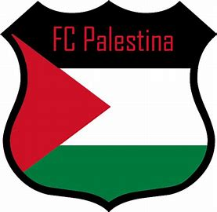
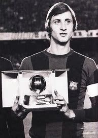
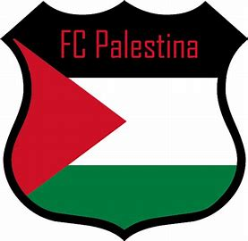
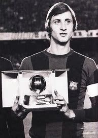
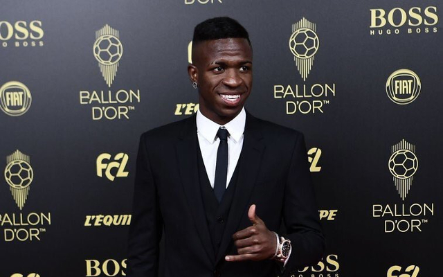
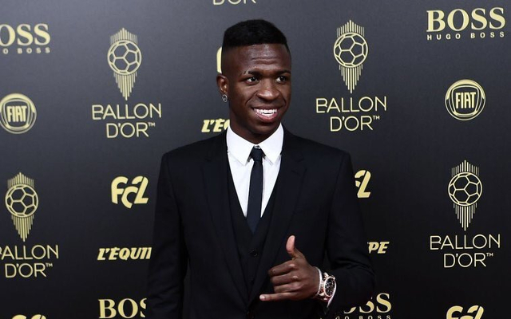

Simply put, the Ballon d'Or 😎is an annual football award presented 👑✒️ by French football magazine France Football to the voted No.1 player in world football. The award has undergone changes over the years, following its inauguration in 1956, with a brief merger from 2010 to 2015 as a combined FIFA World Player of the Year award.
the most 3 in football ballon dor
1st leonel messiThe 36-year-old was recognised at the ceremony in Paris after helping his country win the World Cup in Qatar last year.
England and Real Madrid midfielder Jude👑 Bellingham won the Kopa Trophy for the world's best player aged under 21.
Messi won his record-extending Ballon d'Or award ahead of Manchester City forward Erling Haaland.
France forward Kylian Mbappe - who became just the second man to score a World Cup final hat-trick in the 4-2 penalty shootout loss to Argentina - finished third.
"It's nice to be here once more to enjoy this moment," Messi said. "To be able to win the World Cup and achieve my dream."
The former Barcelona and Paris St-Germain star added: "I couldn't imagine having the career I've had and everything I've achieved, the fortune I've had to be part of the best team in history.
"All of them [Ballon d'Or awards] are special for different reasons."
Spain and Barcelona's Bonmati wins Women's Ballon d'Or
England and Real Madrid's Bellingham wins best young player award
Remarkable records Messi has broken
Listen to Lionel Messi: Destiny
Watch Lionel Messi: Destiny on BBC iPlayer😀😁😂🅿️🅰️Lestℹne
2nd ronaldo{Cristiano Ronaldo has won the Ballon d'Or on five occasions, which is second only to Lionel Messi picking it up seven times.
The Portuguese international collected the honour in 2008, 2013, 2014, 2016 and 2017.
He has also placed second six times (2007, 2009, 2011, 2012, 2015, 2018) and once in third (2019).🅿️🅰️Lestℹne.
In 23 years of senior football, Ronaldo has been nominated to win the Ballon d'Or 18 times, with 2003 being the last time he wasn't on the final shortlist.}🅿️🅰️Lestℹne
3rd cruyjif [In 1971, 1973 and 1974, Cruyff won the Ballon d’Or. He was part of the World Team of the 20th Century, the FIFA World Cup Dream Team in 2002 and the FIFA 100 list of the world’s greatest living players in 2004. He won three European Cups.]🅿️🅰️Lestℹne
the main idea its new to nthnow the ballon dor the best👑😎 messi and mbappe and halaand the people expected halaand reseve the ballon dor he scored 53 and 10 assists
Mbappe 2nd in world cup because kolo muani he got ligue uber east in France [the best in ballon dor is lionel messi reseved best player in world cup he reseved the world cup ligue uber east its lionel messi🪙🥇 ]
Jude👑 Bellingham👑 the best young player👦
vinicius-socratesvinicius-socrates award means the best chairty player💸
 





 
